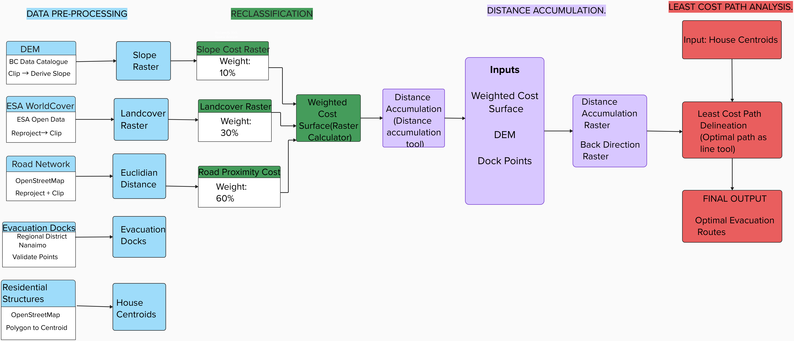

Overview
This project applies GIS-based least cost path analysis to identify optimal wildfire evacuation routes on Mudge Island, BC. Three cost factors — terrain slope, land cover, and road proximity — were reclassified into discrete movement cost categories and combined into a weighted cost surface. The surface was then used to model cumulative evacuation difficulty and delineate the least cost path from each residential structure to its nearest evacuation dock. The analysis was conducted entirely in ArcGIS Pro using the Spatial Analyst toolbox.

Sequential analytical workflow used to model wildfire evacuation movement difficulty and delineate optimal escape routes from residential structures to evacuation docks on Mudge Island, BC
Objectives
- Pre-process and reclassify slope, land cover, and road proximity rasters into discrete movement cost categories
- Construct a weighted evacuation cost surface integrating all three cost factors (slope 10%, land cover 30%, road proximity 60%)
- Run distance accumulation analysis using evacuation docks as destination points
- Delineate least cost evacuation paths from each residential structure to its nearest dock
- Evaluate spatial patterns of evacuation difficulty across the island
Data Sources & Tools
| File | Description |
|---|---|
| DEM (BC Data Catalogue) | Digital Elevation Model clipped to Mudge Island boundary, used to derive slope in degrees |
| ESA WorldCover | Land cover raster reprojected to NAD 1983 UTM Zone 10N and clipped to study area |
| Road Network (OpenStreetMap) | Road network with manually digitized missing southern segment added prior to analysis |
| Evacuation Docks (Regional District Nanaimo) | Validated dock point locations used as evacuation destinations |
| Residential Structures (OpenStreetMap) | Building polygons converted to centroids to represent individual house locations |
| Tool | Purpose |
|---|---|
| ArcGIS Pro — Spatial Analyst | Slope derivation, reclassification, Euclidean distance, Raster Calculator |
| ArcGIS Pro — Distance Accumulation | Cumulative cost surface and back direction raster generation |
| ArcGIS Pro — Optimal Path as Line | Least cost path delineation from house centroids to nearest dock |
Methods
A DEM was clipped to the Mudge Island boundary and used to derive a continuous slope raster in degrees, with values ranging up to 51.5 degrees. The slope raster was reclassified into five discrete cost categories. The ESA WorldCover raster was reprojected and clipped before land cover classes were assigned movement cost values reflecting relative difficulty under wildfire evacuation conditions. The road network was reviewed against aerial imagery — a missing segment on the southern portion of the island was manually digitized before Euclidean distance from the complete network was calculated and reclassified.
The three reclassified cost rasters were combined into a single weighted cost surface using the following expression:
The weighted surface was input to the Distance Accumulation tool alongside the DEM and dock points to produce a cumulative cost raster and back direction raster. Least cost paths were then delineated for each residential structure using the Optimal Path as Line tool.
Reclassification Schemes
| Factor | Input Value / Range | Cost Value | Movement Difficulty |
|---|---|---|---|
| Slope | 0 – 5° | 1 | Very Low |
| Slope | 5 – 10° | 2 | Low |
| Slope | 10 – 15° | 4 | Moderate |
| Slope | 15 – 20° | 8 | High |
| Slope | > 20° | 16 | Very High |
| Land cover | Built-up | 2 | Very Low |
| Land cover | Bare / Sparse | 3 | Low |
| Land cover | Grassland | 5 | Moderate |
| Land cover | Tree cover | 10 | Very High |
| Land cover | Water | NoData | Impassable |
| Road Proximity | 0 – 100 m | 1 | Very Low |
| Road Proximity | 100 – 200 m | 5 | Moderate |
| Road Proximity | > 200 m | 15 | High |
Outputs
Cost Rasters

Reclassified slope-based movement cost raster. Steepest terrain along the southern and southeastern coastal margins carries the highest cost.

Land cover classification and corresponding movement cost raster. Tree cover across the island interior carries very high movement cost.

Euclidean distance from the road network (left) and corresponding reclassified road proximity cost raster (right). Very low costs follow road corridors closely.
Weighted Cost Surface & Distance Accumulation

Weighted evacuation movement cost surface. Lighter areas indicate greater movement difficulty; darker areas indicate easier movement.

Cumulative evacuation cost to the nearest dock. Green = lowest cost near coast; pink/white = highest cost in central interior.
Least Cost Evacuation Paths

Optimal least cost evacuation paths from all residential structures to evacuation docks on Mudge Island, delineated using the Optimal Path as Line tool in ArcGIS Pro
Key Findings
- Road proximity was the dominant factor structuring evacuation routes, with most paths aligning closely with existing road corridors
- Tree cover dominated nearly the entire island surface, making high-cost forested terrain unavoidable for most evacuation routes
- Slope had a localised influence concentrated along the steep southern and eastern coastal margins, with minimal effect across the flat interior
- Coastal residents near docks faced significantly lower cumulative evacuation costs than interior residents, revealing a clear spatial disparity in evacuation accessibility
- The central island interior emerged as the most challenging zone for evacuation, with cumulative costs three to five times higher than coastal areas near docks
Skills Demonstrated
- Raster pre-processing including clipping, reprojection, and slope derivation in ArcGIS Pro
- Manual feature digitizing to address road network completeness issues
- Multi-criteria weighted cost surface construction using the Raster Calculator
- Distance accumulation and least cost path analysis using ArcGIS Pro Spatial Analyst
- Cartographic layout design and map export in ArcGIS Pro
- Spatial interpretation of evacuation movement patterns across a complex island landscape